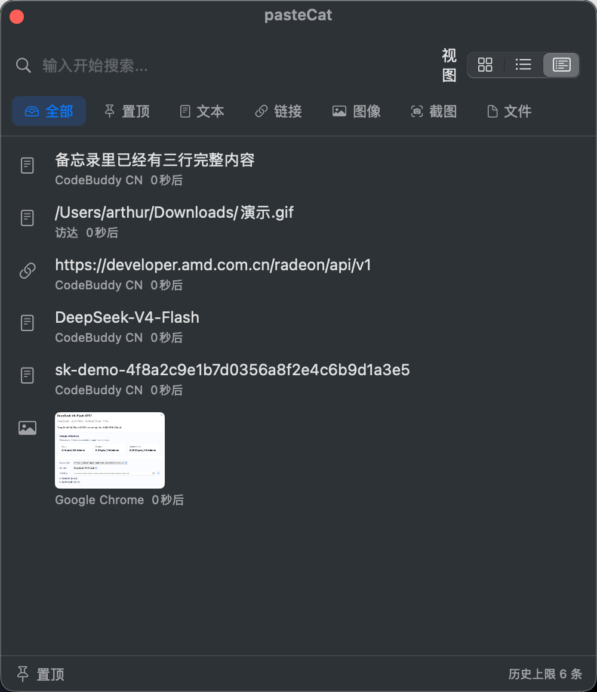
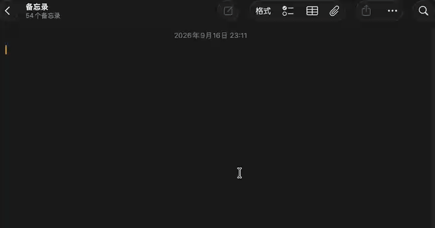
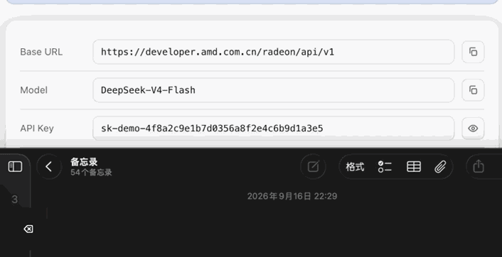
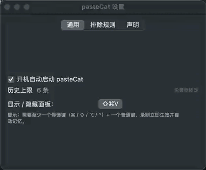
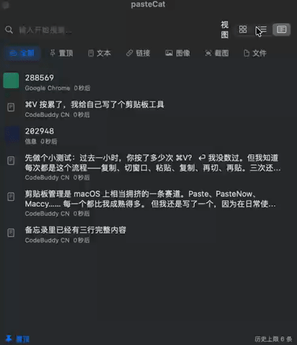

⌘V 按累了，我给自己写了个剪贴板工具
剪贴板管理是 macOS 上相当拥挤的一条赛道。Paste、PasteNow、Maccy…… 每一个都比我成熟得多。 但我还是写了一个，因为在日常使用中，有件事我一直想要，却没能在现成工具里得到。
先做个小测试：过去一小时，你按了多少次 ⌘V？
我没数过。但我知道每次都是这个流程——复制、切窗口、粘贴、复制、再切、再贴。三次还行，五次开始烦躁，十次以后只想把键盘放平。
比如填一张表单：姓名在聊天记录里，电话在备忘录里，地址在邮件里。于是：点开聊天 → 复制 → 切回表单 → 粘贴 → 点开备忘录 → 复制 → 切回来 → 粘贴……
不难，就是烦。
所以我给自己写了个小工具，叫 pasteCat。装上以后菜单栏多一只小猫，按 ⇧⌘V 就能把最近复制过的内容捞回来。

最爽的一点：选中，就已经粘好了
大多数剪贴板工具的流程是：选中内容 → 内容进剪贴板 → 你还得自己按一下 ⌘V。
pasteCat 省掉了最后那一步。在面板里点中哪一条，它就把你送回刚才那个窗口，顺便把内容贴好。整个过程你只做了一个动作：点。

它需要一次「辅助功能」权限授权——因为模拟按键在 macOS 眼里属于敏感操作。第一次用的时候它会自己弹窗引导，跟着点就行。不授权也能用，只是会退化成「我帮你复制好了，你自己按 ⌘V」。
第二爽的：按住 ⌘，一口气选五条
这是我离不开它的真正原因。
唤起面板，按住 ⌘ 别松，用鼠标一条一条点选，选完松开 ⌘。然后 pasteCat 会把你点过的内容按顺序拼成一段，一次贴出去。

我拿它干过这些事：
- 从三个聊天窗口里各挑一段，拼成一条完整通知发出去
- 把散落在文档各处的句子选出来，凑成一段笔记
- 收集一堆零散的命令片段，合成一条能直接跑的命令
比起「复制 → 粘贴 → 复制 → 粘贴」循环五遍，这个体验大概就像从走楼梯换成坐电梯。
小细节：多选的时候如果按了别的组合键，这一轮粘贴会作废，避免手滑把不该贴的东西贴出去（这个我踩过坑，所以专门做了处理）。
它不联网，而且你可以自己验证
pasteCat 里没有任何网络代码。没有账号，没有统计，没有遥测。
数据就在本地：
~/Library/Application Support/pasteCat/不用信我说的。打开活动监视器看看它的网络流量，或者用防火墙掐掉它的所有连接——功能不会有任何变化，因为它本来就不需要网络。
它还带一个「排除规则」，把密码管理器加进去，从那些应用里复制的东西就不会被记录。

装之前，有三件事你得先知道
1. 首次打开会被系统拦一下。
这个应用没有经过 Apple 公证（那要每年 99 美元）。所以第一次打开时系统会说「无法验证开发者」。解决办法任选：
- 在「应用程序」里按住 Control 点它 → 选「打开」
- 或者打开「系统设置 → 隐私与安全性」，拉到页面最底部，点「仍要打开」
- 万一提示「已损坏」，终端跑一行
xattr -dr com.apple.quarantine /Applications/pasteCat.app
2. 这一版的剪贴板历史只保留 6 条。
对，就是 6 条。免费版的设定，超了会自动清掉最旧的（置顶的会留着）。
我不想让你装完才发现这件事，所以写在最前面。如果你需要几百条历史，这一版暂时伺候不了。
3. 需要 macOS 13 或更新版本。
Apple 芯片和 Intel 都支持。
那和别的工具比呢
剪贴板工具的选择很私人，简单说几句大实话：
Paste、PasteNow 都比 pasteCat 成熟。同步、iPhone 端、界面精致度，它们做得更好，值得那个价钱。
Maccy 开源免费，也很能打。
pasteCat 的差异点就一个：能把多条内容合并成一段一次粘贴。这是我从头到尾最想要的功能，也是我动手写它的唯一理由。其他的都是顺带做的。

来试试
免费，macOS 13 以上。下载 DMG，拖进「应用程序」，放行一次权限，就能用了。
如果哪里用着别扭，或者你想要某个功能，欢迎到 GitHub 提 Issue。我一个人开发，每一条反馈都会认真看。
尾巴
写这个工具最大的收获是发现了一件事：「少按一次 ⌘V」这种小到不值一提的优化，一旦习惯了就再也回不去。
工具这东西，有时候不在于它多能干，而在于它把某件小事做得足够顺手。
如果你也受够了「复制五遍、粘贴五遍」，可以试试它。